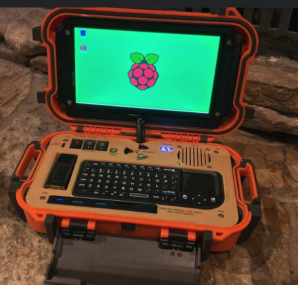

CyberDeck DIY
Getting started with hardware engineering - the first 5 things to know...

Getting started with hardware engineering - the first 5 things to know...

Short notes from the workbench — caps, cold solder joints, and the satisfaction of bringing something back instead of tossing it.